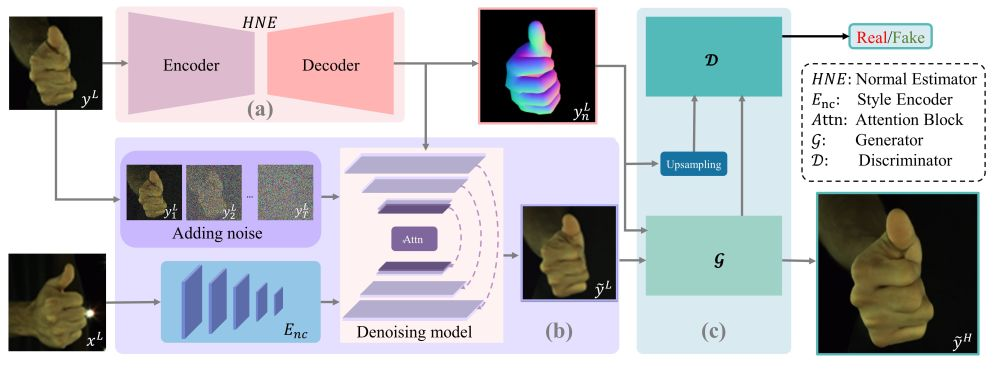

IEEE Transactions on Image Processing (TIP), 2025
NP-Hand: Novel Perspective Hand Image Synthesis Guided by Normals

Training process of the proposed NP-Hand.
The whole framework consists of three key components for synthesizing photorealistic hand images. (a) Given a paired training data, we first estimate the normal map using the designed hand normal estimator (HNE) from the target low-resolution image. We view the estimated normal maps as one of the conditions that drive the consistency of hand structure. (b) Then, we introduce a DDPM-based module to iteratively synthesize low-resolution hand images and also treat the extracted features from the source image as extra conditions to maintain a consistent appearance. (c) By connecting a conditional GAN-based module, we further improve the quality of synthesized low-resolution images and receive a convincing improvement of resolution from 64 to 256, 512, 1024.Abstract
Synthesizing multi-view images that are geometrically consistent with a given single-view image is one of the hot issues in AIGC in recent years. Existing methods have achieved impressive performance on objects with symmetry or rigidity, but they are inappropriate for the human hand. Because an image-captured human hand has more diverse poses and less attractive textures. In this paper, we propose NP-Hand, a framework that elegantly combines the diffusion model and generative adversarial network: The multi-step diffusion is trained to synthesize low-resolution novel perspective, while the single-step generator is exploited to further enhance synthesis quality. To maintain the consistency between inputs and synthesis, we creatively introduce normal maps into NP-Hand to guide the whole synthesizing process. Comprehensive evaluations have demonstrated that the proposed framework is superior to existing state-of-the-art models and more suitable for synthesizing hand images with faithful structures and realistic appearance details.
Inference
Testing process of the proposed NP-Hand on unseen images.
Given a monocular image, unlike estimating the normal map from the target image, we reconstruct the corresponding hand mesh and sample camera positions to render novel-view normal maps, which are used as sampling conditions. Other modules maintain consistent manners with the training process.Results

Comparisons on Interhand2.6M and Hand4K++ (with same guidance). From left-to-right: the source image, target normal, the results are of PATN, DPTN, GFLA, CocosNetV2, NTED, PIDM, CFLD and ours respectively, ground truth.
Performance in 3DGS

With normal maps as guidance, the constructed 3DGS could render hand images with more intricate local details and fewer artifacts.
Performance in Super-Resolution

Super-resolution hand image synthesis on Hand4K++. We depict the visualized results with the resolutions of 1024 x 1024, 512 x 512 and 256 x 256 respectively.
Materials
|
Related links
|
|
Reference
Binghui Zuo, Wenqian Sun, Zimeng Zhao, Xiaohan Yuan, and Yangang Wang. "NP-Hand: Novel Perspective Hand Image Synthesis Guided by Normals". IEEE Transactions on Image Processing (TIP), 2025.
Acknowledgments: This work was supported in part by the National Natural Science Foundation of China (No. 62076061), the Natural Science Foundation of Jiangsu Province (No. BK20220127).